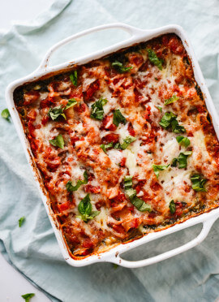

Create your Taste

Are you tired of the same old lasagna? or just want a new recipe. Then you're in luck, I have one of the best
lasagna recipes just for you. This lasagna does require very specific sauces that you will need to make the
mouthwatering lasagna. All instructions below!
how to make lasagna meat sauce
- The sauce is made with a mix of ground beef and pork. This is OPTIONAL. If you don’t like pork you can
definitely use beef to replace it, but the pork does add a traditional lasagna flavour to the sauce.
- Most sauces use crushed tomatoes as a base, however we love mixing in a bottle of Passata (or tomato
sauce) to add richness.
- Using tomato paste results in a thick and rich sauce. Don’t skip this ingredient! We love using one with
garlic and herbs, but plain is also fine.
Ingredients
Meat sauce
- 1 tablespoon olive oil
- 1 onion, finely chopped
- 1 carrot, finely diced
- 4 cloves garlic cloves, minced
- (700 grams) ground beef mince
- (300 grams) ground pork mince, or beef
- (700 grams) Passata
- (410 grams) crushed tomatoes
- 2 beef or vegetable bouillon cubes, crushed
- 1 teaspoon each dried oregano and basil
- Salt and pepper, season to your taste
- 1/2 teaspoon sugar
White Sauce (Béchamel)
- 4 tablespoons butter
- 1/4 cup flour, all purpose or plain
- 3 1/2 cups milk
- 1 cup fresh shredded parmesan
Lasagna
- (375 grams) Fresh lasagna sheets
- (500 grams) Fresh mozzarella cheese, shredded
- 2 Tablespoons finely chopped fresh parsley
Preperation
Meat Sauce
- Heat oil in a large pot over medium heat, then add in the onion and carrots and cook for 8-10 minutes, or
until softened. Add in the garlic and sauté for about 1 minute, until fragrant.
- Add beef and pork (if using) and cook while breaking it up with the end of your spoon, until browned.
- Pour in the Passata, crushed tomatoes, tomato paste, crushed bouillon and dried herbs. Mix well to combine
and bring to a gentle simmer. Season with desired amount of salt and pepper (I use about 3/4 teaspoon each)
and sugar if needed. Cover and cook for about 20-30 minutes, occasionally mixing, until the sauce has
thickened slightly and meat is tender.
- Adjust salt, pepper and dried herbs to your taste.
White Sauce
- In a large pot, melt butter over medium heat. Remove from hot plate; add the flour and whisk for about 30
seconds, or until well blended.
- Place pot back onto stove, reduce heat down to low and slowly whisk in 1 cup of the milk until well
combined. Once well blended, add the remaining milk in 1 cup increments, mixing well after each addition,
until all the milk is used and sauce is free from lumps. If the sauce is too thick, add a little more milk
until it turns into a nice and creamy consistency.
- Increase heat to medium and continue cooking sauce while stirring occasionally until it thickens (about
6-7 minutes) and coats the back of your wooden spoon
- Add in the parmesan cheese and remove from heat. Season with salt and pepper and mix until the cheese is
melted through.
Assembly
- Preheat oven to 180°C
- Spoon about 1 cup of meat sauce on the base of a 9x13-inch baking dish, then cover with lasagna sheets.
(Trim sheets to fit over the meat if needed.) Layer with 2 cups of meat sauce (or enough to cover pasta), 1
cup of white sauce and half of the mozzarella cheese. Repeat layers (leaving the remaining cheese for the
top).
- Pour the remaining meat sauce and white sauce over the last layer of lasagna sheets and top with the
remaining mozzarella cheese. Bake for 25 minutes or until golden and bubbling.
- Garnish with parsley and let stand for about 10 minutes before slicing and serving.
refrence
cafedelights.com